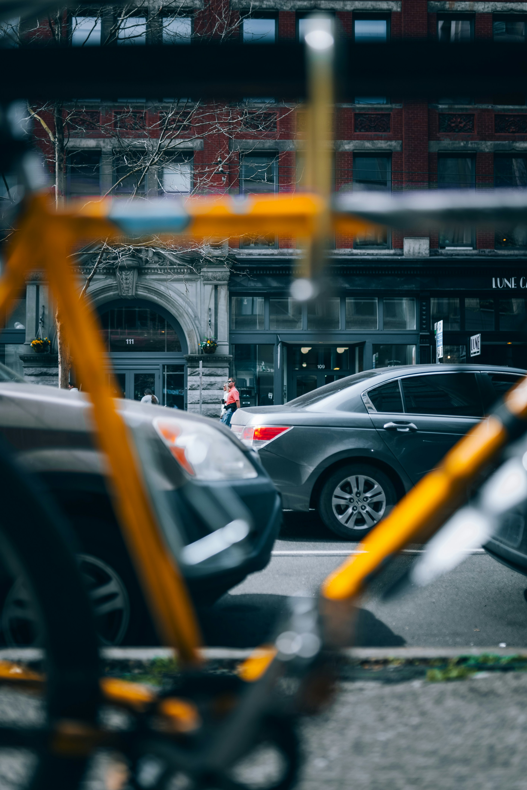

풍경의 사전적 의미는 "눈앞에 평쳐진 자연의 모습"이다. 풍경을 피사체로 삼는 사진은 시야에 들어온 경치를 수동적으로 찍은, 그저 현실을 복제한 것에 불과하다는 평가를 받곤 한다. 다분히 풍경 사진을 폄하하는 뉘앙스가 깔려 있다. 그런데 똑같은 풍경을 두고도, 그 앞에 서 있는 사람들이 느끼는 감정은 제각각이다. 카메라 속에 담긴 이미지도 촬영자에 따라 천차만별이다. 심지어 똑같은 방향을 바라봤음에도 바로 옆 사람은 보지 못하는 낮선 이미지를 포착하는 경우도 있다. 왜 그럴까? 그것은 풍경이란 "발견과 특유의 시각화 과정을 거쳐 만들어지는 창조의 소산물"이기 떄문이다. 잘 찍은 풍경 사진은 자연에 대한 인간의 감각과 인식을 확장해 준다. 풍경 사진도 예술의 세계와 맞닿을 수 있음을 의미하는 것이다. 사진가에게 풍경은 수동적으로 우연히 눈에 들어온 모습이 아니라, 특유의 감각과 능력을 더해 능동적으로 빛어낸 창조물이다. -SW중심사회 2023.02 이호준 <풍경에 관하여> 중에서-

